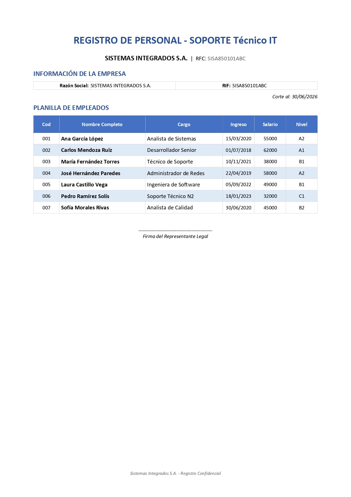

Caso: Hoja de Vida y Planilla de Personal
Configuración de página A4, jerarquía tipográfica Calibri, tablas con anchos específicos, efecto cebra y personalización de bordes
Diseñar y estructurar un documento de registro de personal corporativo en Microsoft Word utilizando una plantilla base. El estudiante deberá configurar correctamente el tamaño de página A4 y los márgenes, establecer una jerarquía tipográfica uniforme con Calibri, diseñar tablas con anchos de columna específicos, aplicar un efecto cebra (sombreado alterno), configurar alineaciones verticales en celdas, y definir bordes y márgenes internos personalizados para lograr una validación impecable de 1000 puntos.
Material de Trabajo
Descarga la plantilla base en formato Word para iniciar el ejercicio:
Instrucciones Paso a Paso
Paso 1: Configuración de Tamaño de Página A4
Configura el tamaño del papel de la página a exactamente A4:
- Abre el documento de plantilla
Caso_Registro_Personal_Clase_Plantilla.docxen Microsoft Word. - Dirígete a la pestaña Disposición (o Formato en algunas versiones de Word).
- Haz clic en el botón Tamaño y selecciona A4 (21.0 cm × 29.7 cm o 8.27" × 11.69").
Paso 2: Configuración de Márgenes de 2.0 cm
Configura los márgenes de página en sus cuatro lados a exactamente 2.0 cm:
- En la pestaña Disposición, haz clic en el botón Márgenes y selecciona Márgenes personalizados... al final del menú.
- En el cuadro de diálogo de configuración de página, introduce el valor 2,0 cm (o 1134 dxa en formato XML) en los cuatro campos correspondientes: Superior, Inferior, Izquierdo y Derecho.
- Asegúrate de aplicar esta configuración a Todo el documento y presiona Aceptar.
Paso 3: Fuente General (Calibri)
Aplica la tipografía oficial Calibri y establece la escala de tamaños del texto:
- Selecciona todo el documento usando la combinación de teclas
Ctrl + E. - En la pestaña Inicio > grupo Fuente, cambia la tipografía a Calibri (asegúrate de que todos los textos usen esta fuente de forma predeterminada).
Paso 4: Formato del Título Principal
Aplica un diseño destacado al nombre de la corporación:
- Selecciona el texto del título principal:
"Sistemas Integrados S.A.". - Establece el tamaño de fuente en exactamente 26 pt.
- Aplica formato Negrita (
Ctrl + N). - Aplica el color de fuente Azul Oscuro (código hexadecimal #1F4E79 o RGB: Rojo 31, Verde 78, Azul 121).
- Centra el título haciendo clic en el botón Centrar (o presiona
Ctrl + T).
Paso 5: Configuración de la Tabla 1 — Información de la empresa
Aplica propiedades de diseño fijo y formato a la primera tabla:
- Haz clic derecho sobre la primera tabla (Información de la empresa) y selecciona Propiedades de tabla...
- En la pestaña Tabla, asegúrate de establecer el Ancho preferido al 100% con alineación a la izquierda o centro (sin combinaciones).
- La tabla debe constar de 6 filas en total (1 fila de encabezado y 5 filas de datos).
- Selecciona las dos celdas de la fila de encabezado (
"Atributo"y"Valor"):- Aplica un Sombreado de color azul (código hexadecimal #4472C4 o RGB: Rojo 68, Verde 114, Azul 196) en la pestaña Diseño de tabla > grupo Estilos de tabla > botón Sombreado.
- Establece el texto en color Blanco y aplica Negrita.
- Los datos de la tabla corresponden a la siguiente información (asegúrate de que estén escritos exactamente así):
- Nombre: Sistemas Integrados S.A.
- RUT: 76.123.456-7
- Dirección: Av. Providencia 1234, Santiago
- Teléfono: +56 2 2345 6789
- Email: contacto@sistemasintegrados.com
Paso 6: Configuración de la Tabla 2 — Planilla de personal (Dimensiones e Interlineado)
Ajusta el tamaño y la distribución general de la planilla:
- Haz clic derecho sobre la segunda tabla (Planilla de personal) y selecciona Propiedades de tabla...
- En la pestaña Tabla, establece el Ancho preferido a exactamente el 100% y asegúrate de que el diseño sea fijo.
- Selecciona la primera fila (los encabezados de columna) y, en la pestaña de herramientas de tabla Disposición (o Presentación) > grupo Tamaño de celda, establece la altura de la fila a un valor mínimo de 500 dxa (equivalente a 0,88 cm).
- Selecciona todas las filas de datos inferiores y establece la altura de la fila a un valor mínimo de 340 dxa (equivalente a 0,60 cm).
- Con toda la tabla seleccionada, ve al grupo Alineación en la pestaña Disposición y selecciona Alinear verticalmente o Alinear en el centro a la izquierda / al centro para centrar verticalmente el contenido dentro de cada celda.
Paso 7: Ancho Exacto y Alineación de Columnas en Tabla 2
Define el ancho específico y las alineaciones de contenido para cada una de las 6 columnas de la planilla:
- Cód. (Columna 1): Ancho preferido: 9,5%. Encabezado sombreado en color #4472C4 con texto blanco, negrita y centrado. El contenido de los datos debe estar alineado al centro.
- Nombre Completo (Columna 2): Ancho preferido: 30%. Encabezado sombreado en color #4472C4 con texto blanco, negrita y centrado. El contenido de los datos (nombres) debe estar alineado a la izquierda.
- Cargo (Columna 3): Ancho preferido: 27,5%. Encabezado sombreado en color #4472C4 con texto blanco, negrita y centrado. El contenido de los datos (cargos) debe estar alineado a la izquierda.
- Ingreso (Columna 4): Ancho preferido: 11%. Encabezado sombreado en color #4472C4 con texto blanco, negrita y centrado. El contenido de las fechas de ingreso debe estar alineado al centro.
- Salario (Columna 5): Ancho preferido: 11%. Encabezado sombreado en color #4472C4 con texto blanco, negrita y centrado. El contenido de los salarios debe estar alineado al centro.
- Nivel (Columna 6): Ancho preferido: 11%. Encabezado sombreado en color #4472C4 con texto blanco, negrita y centrado. El contenido de los niveles jerárquicos debe estar alineado al centro.
Paso 8: Efecto Cebra en Filas de Datos
Aplica sombreado alterno a las filas de la Tabla 2 para mejorar la legibilidad:
- Deja las filas impares de datos (filas 1, 3, 5 y 7) sin sombreado de color o con sombreado blanco (#FFFFFF).
- Aplica sombreado de celda de color azul muy claro (código hexadecimal #DEEAF6 o RGB: Rojo 222, Verde 234, Azul 246) a las filas pares de datos (filas 2, 4 y 6).
- Fila 1 (Ana García López): Blanco (#FFFFFF)
- Fila 2 (Carlos Mendoza Ruiz): Azul Claro (#DEEAF6)
- Fila 3 (María Fernández Torres): Blanco (#FFFFFF)
- Fila 4 (José Hernández Paredes): Azul Claro (#DEEAF6)
- Fila 5 (Laura Castillo Vega): Blanco (#FFFFFF)
- Fila 6 (Pedro Ramírez Solís): Azul Claro (#DEEAF6)
- Fila 7 (Sofía Morales Rivas): Blanco (#FFFFFF)
Paso 9: Personalización de Bordes y Márgenes de Celda
Define la cuadrícula de la planilla y el espaciado interno de los datos:
- Bordes de datos: Selecciona todas las celdas de datos y aplica un borde sencillo y delgado de color gris (código hexadecimal #CCCCCC o RGB: Rojo 204, Verde 204, Azul 204).
- Bordes de encabezado: Selecciona únicamente la fila de encabezados y aplica un borde de color azul oscuro más grueso (código hexadecimal #2E5090 o RGB: Rojo 46, Verde 80, Azul 144).
- Márgenes de celda: Selecciona toda la Tabla 2, dirígete a la pestaña Disposición > grupo Alineación > haz clic en Márgenes de celda. Configura las siguientes distancias de celda:
- Superior: 20 dxa (aproximadamente 0,04 cm).
- Inferior: 20 dxa (aproximadamente 0,04 cm).
- Izquierdo: 60 dxa (aproximadamente 0,11 cm).
- Derecho: 60 dxa (aproximadamente 0,11 cm).
Paso 10: Pie de Página Corporativo
Inserta la firma de confidencialidad al final de la página:
- Dirígete a la pestaña Insertar > grupo Encabezado y pie de página > haz clic en Pie de página y selecciona Editar pie de página.
- Escribe exactamente el siguiente texto:
"Sistemas Integrados S.A. - Registro Confidencial". - Asegúrate de que esté formateado en fuente Calibri, tamaño estándar y alineado a la izquierda.
Paso 11: Validación del Caso con Node.js
Verifica que todos los parámetros cumplan estrictamente con las reglas de validación:
- Abre una consola de comandos (Terminal o PowerShell) en la carpeta donde tienes los archivos del curso.
- Ejecuta el siguiente comando para verificar el archivo guardado:
node validar_caso.js Caso_07_Clase.docx - El resultado esperado en consola debe ser una puntuación de 1000/1000 con todos los requisitos en ✅.
Guarda el archivo finalizado con el nombre exacto Caso_07_Clase.docx y preséntalo para su validación final.
Resultado Esperado
El documento finalizado consta de una página y debe verse exactamente como se muestra en la siguiente imagen:
